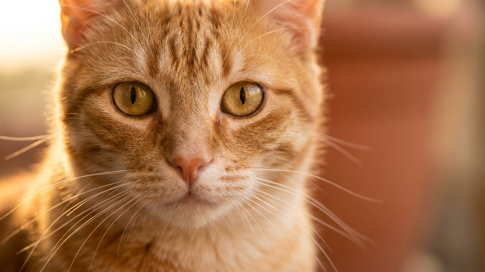

Включили отопление - питомец начал чесаться, шерсть потрескивает от статики, а нос стал сухим и шершавым. Многие владельцы списывают это на смену сезона и не задумываются о причине. Между тем влажность в квартире с первыми батареями падает до 20-30%, а норма для кошек и собак - 40-60%. Ниже конкретно: что происходит с питомцем и что с этим делать.
🐾 Заведите дневник ухода за питомцем
Вес, шерсть, обработки, прививки — всё в одном месте. А если что-то смущает, AI-ветеринар ответит круглосуточно и бесплатно.
Завести дневник → Завести в MAX →
У вас iPhone? AnimaLife есть в App Store
Сухой воздух вытягивает влагу из верхнего слоя кожи - у кошки и собаки примерно так же, как у человека после долгого перелёта. Шелушение, перхоть на подстилке, зуд без видимых причин. Шерсть накапливает статическое электричество: прикоснулись - щёлкнуло. Подушечки лап и мочка носа трескаются, особенно у короткошерстных пород. Лысым кошкам (сфинкс, петерболд) достаётся сильнее всего: кожа без шерстяной защиты высыхает быстрее.
Питомец при этом пьёт больше обычного. Это нормальная реакция на сухость воздуха, но если воды мало или миска стоит одна - риск обезвоживания выше, чем летом.
Постоянный зуд без блох и других видимых причин, выраженное шелушение, потрескавшиеся подушечки, резкое увеличение потребления воды - каждый из этих признаков по отдельности может быть реакцией на сухой воздух. Все вместе или усиливающиеся со временем - хороший повод для планового осмотра у ветеринара. Специалист исключит другие причины и даст рекомендации по уходу именно для вашего питомца.
Короткомордым породам (мопс, британец, персидская кошка) труднее: они и в обычных условиях дышат с нагрузкой, а сухой воздух раздражает слизистые сильнее. За ними стоит наблюдать внимательнее с первых же недель отопительного сезона.
🐾 Чтобы уход не держать в голове
AnimaLife напомнит, когда стричь когти, вычёсывать, купать и обрабатывать от паразитов, и заведёт дневник по вашему питомцу. Бесплатно.
Настроить напоминания → Настроить в MAX →
У вас iPhone? AnimaLife есть в App Store
🐾 Понравился разбор?
Подпишитесь на канал — каждый день разбираем по одному тревожному симптому у кошек и собак: что в пределах нормы, а когда пора к врачу. Подпишитесь, чтобы не пропустить разбор, который может спасти здоровье вашего питомца.
Материал носит информационный характер и не заменяет очную консультацию ветеринара.